Free to forkNo licence and no copyright claim: build this game under your own name, or lift one idea from it. Why?
Game overview
AAL Superweapon is a side-view action shooter that is an honest power fantasy. You play an agent who is overpowered from the first second: four guns firing at once, infinite flight, slow motion on demand, and enough armor to wade through a horde. The fun isn't in surviving. It's in watching a physics world come apart.
The agent raids a planet-wide weapons laboratory left by a long-gone alien civilization, looking for technology that could save the galaxy. Its levels are hand-made, but every playthrough shuffles their order, and everything inside them: which enemies, which hazards, which weapons you find, in what order. No two campaigns play the same.
It takes the free-aiming, mouse-and-keyboard physics combat of Soldat and Cryptark, with the ragdolls, gibs and particle carnage of Cortex Command, in a side view like Super Metroid's.
Target audience
Players who love side-view action and physics chaos, and who have grown tired of two things: "power fantasies" that keep them weak, and campaigns that play out the same way every time they come back.
They're hungry for real power and real variety, and sated by nothing that resets them to zero.
It's free-aim keyboard and mouse, but easy at its core, and slow motion is always there when things get hectic.
Game's purpose
Power: a true feeling of it, from the first second, that only gets more varied.
Excitement and play: the thrill of carnage, surprising physics chaos and effects that feel good.
Variety: a campaign that's different every time, so there's always something new to meet.
It deliberately avoids draining freedom (no locked specializations, carry anything) and respect for your time (nothing to earn back after a restart, nothing to grind).
Core concept
Most games called power fantasies start you weak, make you earn your power, and then make you earn it all again on the next playthrough, through the same levels in the same order.
Here you start overpowered, and the campaign reshuffles hand-made levels and everything in them, every time.
It isn't a roguelite: nothing resets you to weakness, and the levels aren't procedurally generated. It's an old-style campaign, organized so that every piece of hand-made content gets used in every possible combination.
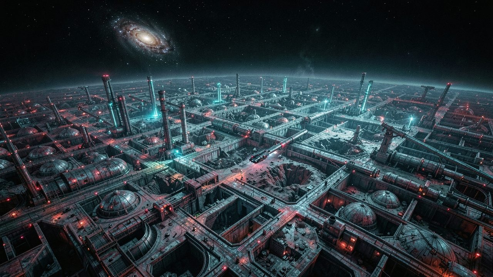
"A whole planet of weapons research, built by a civilization that didn't live to use any of it."
Lore and story
A galaxy that needs a bigger gun
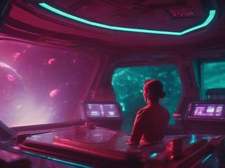
In the AAL Universe, the Milky Way has become a kind, united civilization, and it has just learned that the dark beyond its borders is full of space monsters: swarms and fleets far bigger than anything it has fought. Defending forever won't work. It needs weapons that shoot far, hit hard and end the threat for good, and its own science can't build them yet.
So the galactic agency sends agents out between the galaxies in stealth starships, looking for what older civilizations left behind.
The laboratory planet
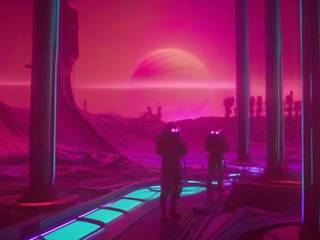
One of them finds a mysterious planet in another galaxy, covered from pole to pole by a single laboratory complex. A long-gone civilization researched weapons here on a scale nobody has seen before. Then it vanished, and the complex kept going without it.
Its halls are anything but empty. The lab's own automated defenses still guard it, its experiments have bred and wandered loose, and monster stragglers have nested in the ruins. It's a target-rich environment, and every sector of it holds technology worth taking home.
The agent
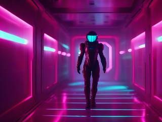
You are that agent: a citizen of the far-future Milky Way, effectively immortal, backed up and redesigned for exactly this job. Fast, armored, able to fly and to carry an arsenal, you are a one-person superweapon sent to fetch another.
The job right now
Rip through the complex sector by sector and bring back whatever could turn the tide. What the agents recover here becomes the galaxy's first superweapon, the one that later fires and changes the Milky Way's war for good.
Controls and interface
Side view, keyboard and mouse, with free aiming in every direction. The agent moves fast and never runs out of air: running, climbing, flying and dashing all blend into one continuous motion. A suggested layout:
Move
A D
Run; push into a wall to climb it
Space
Jump; hold to fly, for as long as you like
Shift
Dash in any direction
Fire
Mouse
Aim, freely, all the way round
L, R, Q, E
One key per weapon slot; hold any together to fire them at once
Arsenal
F
Pick up the weapon or item at your feet
G
Drop it, or hold to throw it
Wheel
Cycle through the carried stack
Tab
Switch between the four slots and the stack
Power
Ctrl
Slow motion on or off, with no limit
Z
Call in support: supplies, artillery, a missile strike or drones
Esc
Pause
The screen stays on the action. What matters is shown by the world itself: recoil you can feel, knockback you can see, enemies that fly apart when they're done.
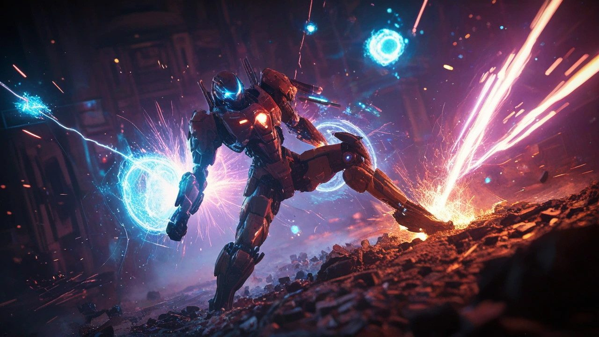
"Rigid terrain stands. Everything else, from crates and doors to machines and enemies, can be destroyed."
Game layers
01 · Moment-to-moment
Tearing through a room
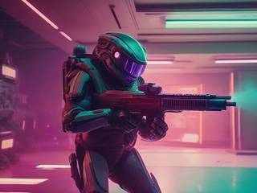
Fly in, open up with four guns, dash through the gap you just blew in the wall. Every weapon is strong enough to end an enemy in about a second, so the question is never whether you'll win a fight, but how spectacularly.
Enemies still push back. They shoot, swarm and use the lab's hazards, and there are a lot of them. It's one superhero against a giant, varied horde, and the physics makes every clash a little different.
02 · Low metagame
A level, then a campaign
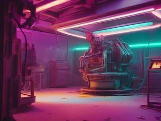
A level is one sector of the complex: hand-designed terrain and spawn areas, filled on every visit with a different mix of enemies, hazards, decorations and finds. You fight through it, pick up what's useful, and leave a lasting mark: whatever you break stays broken.
A campaign is one playthrough, a route through the complex's sectors from start to finish, in an order that's random every time. It's a complete arc with a clear beginning, progress and end.
03 · High metagame
A complex that keeps growing
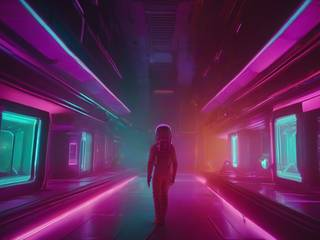
The laboratory planet is bigger than any one campaign, and the agency never runs out of reasons to send you back. Each new campaign is a new shuffle of the whole pile: levels, enemies, weapons, hazards and backdrops, met in a new order.
And the pile keeps growing. A new level, weapon or enemy doesn't add one more thing to see; it changes the mix of every campaign after it. Even one new gun is a reason to play again.
04 · Practical game flow
One sector at a sitting
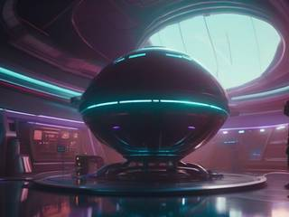
Start a campaign and you're in the first sector within moments, at full power. No tutorial gate, no weak opening hours.
Each level is a natural stopping point, and the campaign waits there until you come back. Play one sector over a lunch break, or rip through half the complex in an evening.
Game modes
There's one mode: the campaign. Its structure nests, so every session length has a natural place to stop:
The laboratory planetEvery campaign, for as long as the content pile keeps growing.
A campaignOne playthrough: the sectors in a random order, start to finish.
A levelOne hand-made sector with a fresh mix of enemies, hazards and finds.
A fightA room, a horde, a few seconds of carnage.
Features and mechanics
The heart of it
Firing frames, four at once or twenty in a stack
Every gun in the game is built on a firing frame: a universal weapon platform, a box-like high-tech shape with its workings hidden inside. Because the outside says so little, a frame can become any kind of gun, firing any kind of projectile in any arrangement, and it takes attachments or scales up to fit a vehicle, a mech or a battleship.
Weapons are objects in the world. You can pick them up, drop them and throw them, and carry them in either of two ways, switching between them whenever you like:
Four slots
The stack
Up to four weapons held at once, each on its own key, all firing together if you hold them all
About twenty weapons carried, cycled with one button, each used until it breaks or runs dry, then tossed
You're never locked into a specialization. Whatever you find, you can use, and whatever you're tired of, you can drop.
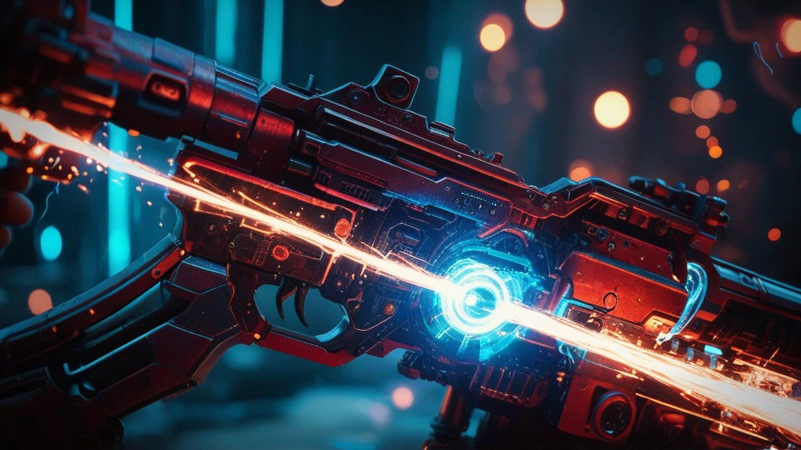
"A firing frame can become any gun, firing anything in any pattern, and scale up to fit a battleship."
Freedom of movement
Run, climb, fly, dash
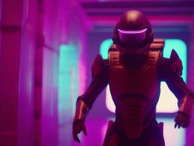
The agent is fast on foot, jumps high, climbs any wall, flies with no fuel limit and dashes in any direction. There's no stamina bar and no ledge you can't reach.
Most power fantasies quietly limit movement, because it's the easiest way to make a level last longer. Here movement is part of the power: a room can be taken from the floor, the ceiling or straight through the middle.
Physics carnage
Everything pushes back
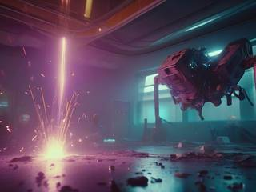
Combat runs on physics: knockback, recoil, projectiles that shove what they hit, explosions, gravity, and environmental hazards that hurt whoever stumbles into them, enemies included. Enemies become ragdolls and gibs, particles fly, and elemental effects spread.
Only the rigid terrain is indestructible. Everything else, from props to machinery, can be destroyed, and stays destroyed for the rest of the level.
Hard to stop
Armor, a parting gift, and a new body
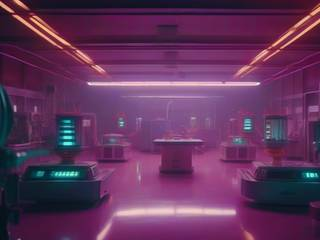
The agent takes a lot of damage before going down, so a mistake costs a little armor, not the level. When the agent does go down, it's with a small nuclear blast that takes everyone nearby along.
Then, being effectively immortal, the agent comes back in a new body and carries on. Nothing rewinds: the level stays exactly as wrecked as you left it, and the enemies the blast took with it stay gone.
Control over chaos
Slow motion with no limit
Slow motion is an ability, not a resource. Turn it on whenever a room gets hectic, keep it on as long as you like, turn it off when you're ready.
That's how the game stays easy to play and still chaotic to watch. Slow motion turns a blur of projectiles into a scene you can read, steer through and savor, and the best explosions deserve to be seen slowly anyway.
You're not alone out there
Support from orbit
The agency backs its agent up from the ship overhead: supply drops, artillery strikes, missile strikes from orbit and autonomous support drones that fight beside you.
Some of what you find in the lab goes further still. A few weapons are outright superweapons, able to wipe out a whole room or a whole section of a level in one shot.
The structure
Hand-made levels, shuffled
The levels are not procedurally generated. Their terrain and spawn areas are designed by hand, the old-fashioned way. What changes every playthrough is how they're organized:
the order the levels come in
which enemy types appear, where and how many
which hazards and decorations fill each level
which weapons, items and support turn up, and in what order you find them
Most campaigns play the same way every time: the same opening, the same levels in the same order, the same items met in the same sequence, so a second playthrough is a rerun of the first. This one is built so that every piece of hand-made content appears in every combination it can, which turns a fixed amount of content into a campaign you never quite see the same way twice.
Content that multiplies
Every new piece enriches the pile
Levels, enemies, weapons, items, props, hazards and backgrounds each live in their own list, and each list can keep growing forever. Because a campaign mixes all of the lists together, every new piece multiplies the combinations instead of adding one more thing to see once.
That makes the game expandable without limit, and it turns the usual treadmill of making content upside down: a small addition gives every old campaign something new.
One art standard
An all-star cast of pixel art
Apart from the firing frames, the graphics come from the huge libraries of free pixel-art packs that artists have shared online. Each sprite is adapted to one shared scale, built around the common 32×32 pixel grid, and scripts generate a basic set of animations from a single image.
The result is a look like a big community collab, where characters from many hands share one world, and new characters, props, hazards and items can be made quickly. With the physics, gibs and particles already in place, even a simple sprite gets exciting once it has interesting behavior. It also opens the game to mods and contributions: someone's sprite can become a new enemy in everyone's next campaign.
Trivia
The free asset libraries are part of the inspiration. Every artist who uploads a sprite pack probably hopes, somewhere, that it'll end up in something big. This game was imagined as the place where that happens: an all-stars game built from their work.
The superweapon the agents bring home doesn't go entirely to plan. On the AAL Universe page, the first planet-killing cannon built from this era's discoveries is badly configured and tears a wound in space-time big enough to swallow two star systems.
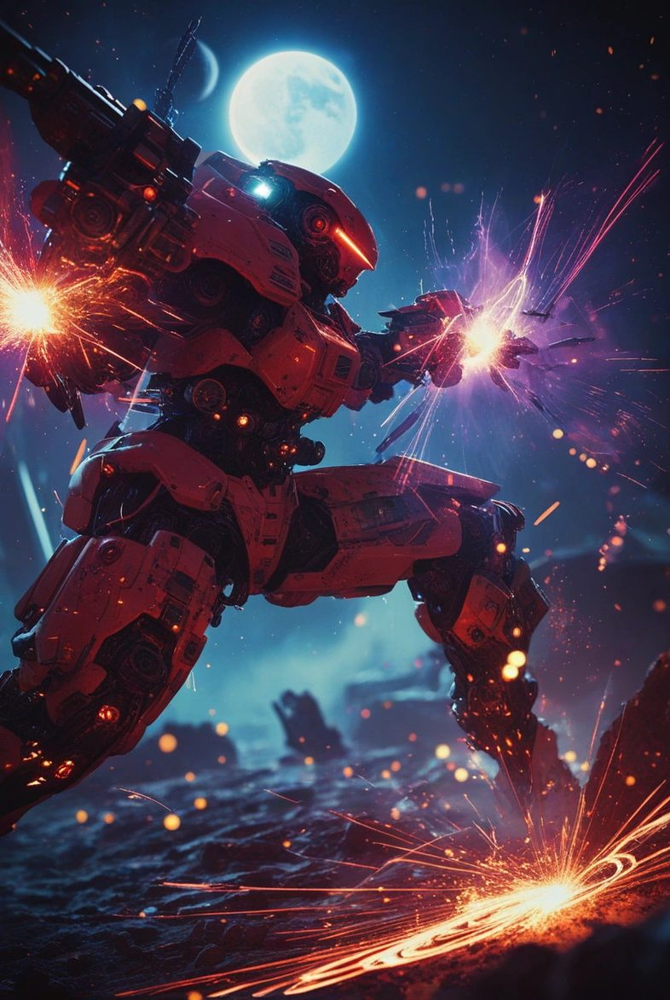
Agency dispatch
AAL Superweapon: Physics Combat Devastation
Agent. A whole planet of alien weapons research is waiting for you, and so is everything that's moved in since its makers left.
You have four guns, infinite flight, slow motion, an orbital strike on call and a body that won't stay down. You're not here to survive the lab. You're here to strip it.